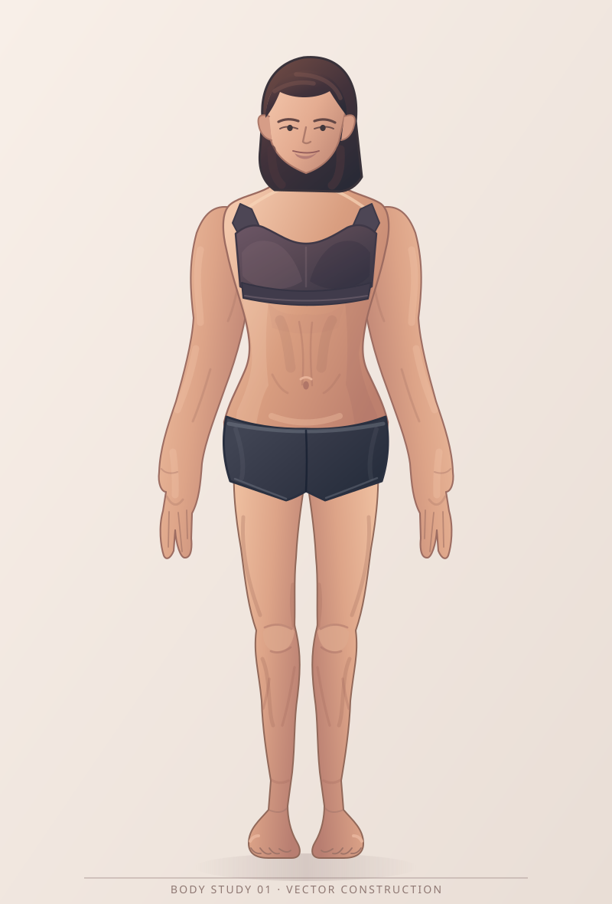
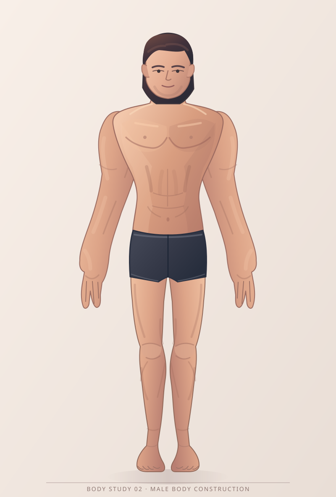

Body Study 02 · Compare anatomy
Two original SVG drawings · same front view, height, stance, lighting style and construction system
Female · Study 01

Male · Study 02

Two original SVG drawings · same front view, height, stance, lighting style and construction system

